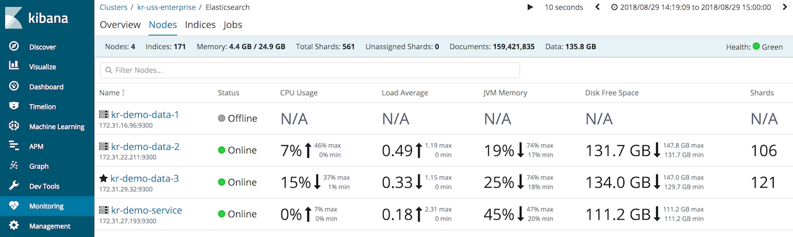
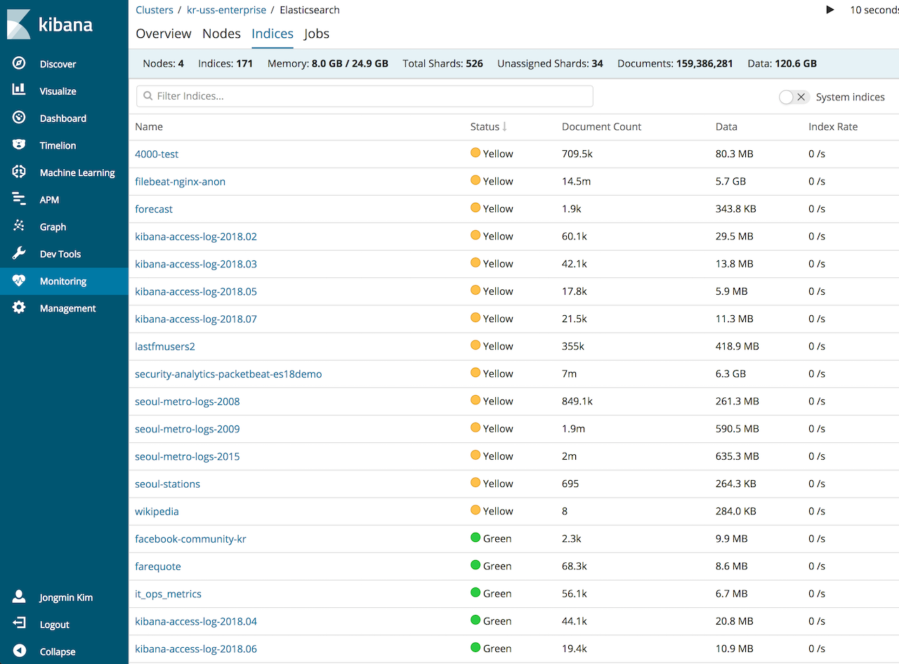
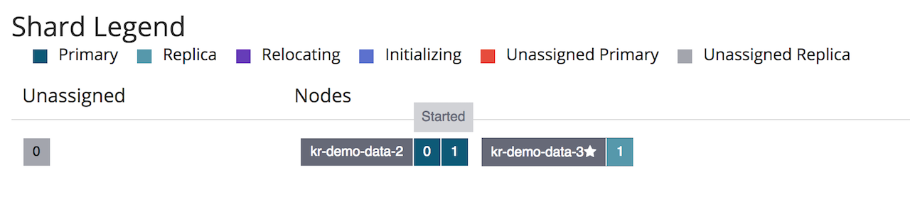
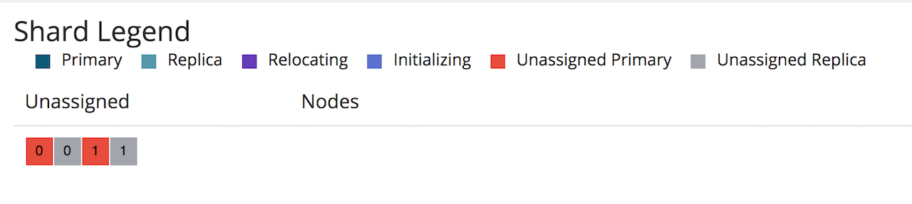

지난번에 Elastic Cluster 구성 시리즈에서 구성 해 놓았던 클러스터를 6.4 버전으로 업그레이드를 하는 웨비나를 진행했습니다. 웨비나라기 보다는 개인 작업하는 모습을 공개적으로 방송을 하면서 진행을 했습니다.
먼저 결론부터 말씀드리자면 중간에 버벅이면서 마이그레이션은 실패로 끝났습니다. 당시는 원인이 뭔지 몰라서 끝냈는데, 나중에 차근 차근 생각 해 보면서 원인을 찾았습니다.
우선 기존 클러스터는 6.2.3 버전으로 되어 있었고 아래 플러그인들이 elasticsearch에 설치되어 있었습니다.
- seunjeon
- openkoreantext
그리고 6.4 에서 한글 형태소 분석기인 nori 가 출시되었기 때문에 이제 다른 형태소 분석기는 설치하지 않고 nori만 설치 할 계획이었습니다.
일단 화려하게 6.2.3 –> 6.4.0 으로 데이터 유실 없이 롤링 업그레이드를 하려고 했습니다.
기존의 6.2.3 데이터 노드를 하나씩 종료시키고 6.4.0 노드를 바인딩 하면서 샤드들을 재배치(를 기대)했습니다.

그런데 몇개의 인덱스는 계속 기다려도 새로운 노드로 샤드들이 올라오지 않습니다.

kr-demo-data-1 노드를 새로 바인딩 시켰는데도 해당 노드에는 assign 이 안됩니다.

결국 그때는 원인을 알지 못하고 풀 클러스터 재시작을 했는데 결국 그 인덱스의 샤드들은 살려내지 못했습니다.

오늘에서야 원인을 깨달았는데, 샤드 재배치가 안 된 인덱스들은 모두 seunjeon 분석기를 적용 해 놓은 것들이었습니다. 6.4.0 에 seunjeon이 설치되어있지 않다 보니 데이터를 불러오는데 오류가 생겼던 것이었습니다. 6.3.0 부터는 플러그인 개발 구조도 바뀌어서 6.4.0에 seunjeon을 설치 할 수도 없었습니다.
매핑에 설정된 플러그인을 사용 못 하니 snapshot 떠 놓은 데이터를 restore 하는것도 안 되었습니다. 결국 저 데이터는 저장 해 놓은 소스를 다시 긁어다가 다시 색인을 할 수 밖에 없었습니다.
이 경우 해결방법은 다음과 같습니다.
- seunjeon 등의 커스텀 분석기등을 사용하는 인덱스는 모두 필드들을 기본 색인으로 바꾸고 임시(temp) 인덱스에 재색인 합니다. 또는 아예 index:false 로 해서 _source 만 저장하는것도 좋은 방법입니다. 어차피 도로 재색인 해 와야 하니까요.
- 기존 인덱스를 삭제합니다.
- elasticsearch 노드를 새로운 버전으로 업그레이드 합니다.
- 새 버전에 맞는 형태로 인덱스 매핑을 다시 만듭니다.
- 임시 인덱스의 데이터를 새 인덱스로 다시 색인합니다.
이 작업 과정은 다시 아래 영상에 있으니 한번 확인 하시고, 모두 오류 없는 업그레이드 하시기 바랍니다.
가능하면 커스텀 플러그인들은 매 버전 직접 만들 자신이 없으면 사용을 자제하고 Elastic 에서 공식적으로 배포한 플러그인들을 사용하는것이 여러가지로 안전하고 좋을것 같습니다. 특히 6.4 부터 한글 형태소 분석기 nori도 나왔으니 이제 그동안 고질적인 요구사항이었던 한글 검색 부분도 원할하게 할 수 있게 되었습니다.
nori 플러그인에 대해서는 다음 블로그를 참고하세요.
공식 한국어 분석 플러그인 “노리”